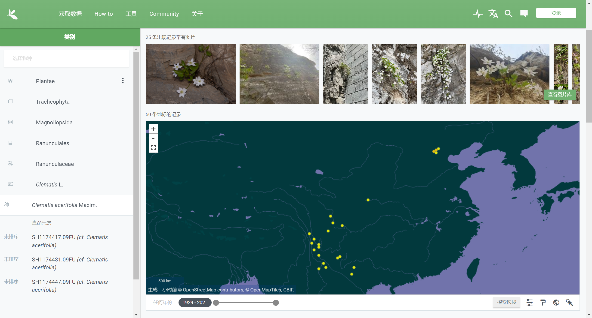

社工信息搜集
BV1Jk4y1S7H7
推荐up主：地图侦探、地球百科君、MU芝士语言学
星空定位经纬度
BV1YW421973A
假设天上两卫星，以其中一个卫星为圆心和你的距离为半径画一个球体，这个球体和地球交线为一个圆，你只可能在这个圆上

另一个如法炮制，则一个球和一个圆焦点只有两个点，你一定在这两个点上

此时如果以你为原点，两颗卫星的相对位置会为你排除其中一个点，你的位置就能确定。如果天上卫星越多，就越精确

对于星星可视作无穷远距离，我们假设它们都在一个单位球上即可


以该图为例图，图中位于上方的消失点是天顶（0,0,1），再通过焦距计算出每个恒星的球坐标，因为以赤道算


恒星的赤经、赤纬是确定的

则我们就能将赤经转换为地平线坐标下的时角，也能将赤道坐标的北极点转化为地平坐标，那么纬度和地方时就知道了
赤经/赤纬（当前日期纪元）：10h47m41s/+7°07'51" |
如果知道时间，还能确定经度，当然，就算不知道时间，如果图片中能看到月亮，或者图片清晰度较高且能看到金星或者火星，也能确定位置，因为这三个离我们比较近

比如金星，将位置调离当前位置10个经度、10个纬度，金星的赤经和赤纬分别变化了1秒和2秒
当前位置：114.514E,40.1920N |
注意事项
发星空照片时
-
最好不要有任何地景，这样便无法确定天顶在哪。如果主要目的是夜景，请处理图片时将照片中的星星拉到看不见；如果主要目的是星空，一般专业的天问摄影者才会追求照片的不一致而附带地景。
如果你希望带地景，最好不要发出来，或者只有树木这种不笔直的难以用来确认天顶的景物也是可以的。
-
不要即拍即发。一般情况下专业的天问摄影者带地景的照片也都是回去叠加等处理之后才发出来的，你也可以在拍完回到室内后修一修，然后定时发表，不要透露拍摄的真实时间。
-
如果主要目的是拍月球，不要把曝光拉太高，否则会把边上恒星拍进来。
-
照片中请勿出现南门二或水委一，否则认识星星的人一眼就知道你大概率在海南（小概率在广东、福建、台湾、广西、云南）。当然要在国外旅游的话那没事。


植物、物候粗略定位
物候
春天的时候，武汉和哈尔滨物候能差50天

物候加减算法：BV1p5411o7Qi
+代表比此地早相应天数，-代表比此地晚相应天数
2-5月物候差：
9月物候差：


只要算花期在范围内的地方就行，如果能从照片中看出是始花还是盛花还是开败，还能更加精确
尤其是春季花卉主力军蔷薇科，从初花到开败总共就十天出头。
花期最短的是紫叶稠李，只有7天左右，其他李属植物比如桃杏李大多数在十一二天，苹果属的比如各种海棠和梨属的稍微长点，绣线菊属的最长，但也不超过20天。只有月季和棣棠等一些培育品种花期可以长达几个月。
植被
软件推荐：形色
国内高原、草原、荒漠、寒温带、中温带、暖温带、亚热带、热带的典型植被网上图片一大堆
用普通植物确定位置就是一个平面规划，用每种植物的分布取交集

全球生物多样性信息设施（GBIF）：有所有植物的观察到的地点，搜索要用学名
GBIF最大的问题是不能保证鉴定正确，当然对于普通人来说是完全够用的
例如槭叶铁线莲，西南的这些点全部是错误鉴定
但对于大多数常见的植物来说，只要正确鉴定足够多，错误鉴定的地点就能一眼看出来

实战

孤独摇滚第九集
可辨认出三种植物：鹅掌柴、贯众、玉竹

玉竹亚欧广泛分布不考虑。鹅掌柴是很典型的热带植物。因为现在有很多室内种植，所以GBIF上的点可信度就比较低了，我们翻国内标本，最北的是浙江平阳
虽然最北的是浙江平阳，但是平均气温最低的产地是贵州紫云，故后续按照紫云算

再找到日本一月最低气温图，可以把地点确定到本州岛东南近岸以及更南

贯众是典型的温带植物，从分布可看出只要一到南亚热带就没了
贯众：
广东：乳源、乐昌、平远、阳山、英德
广西：武鸣、马山、融水、阳朔、临桂、兴安、龙胜、资源、百色、德保、凌云、田林、隆林、东兰、珠江、龙州
这样再排除琉球群岛和九州岛南部，这样面积已经缩小到约7万平方公里的区域了，相当于一个重庆

行道树
35种及危险等级，危险等级越高的越不要在自己发表的照片中出现
下图中如果上色是暖色调为主，若非特殊说明，则红色一般代表很大可能会作为行道树的地方
橙色代表有但是不太可能当做行道树大规模种植的地区
如果只涂了蓝色则蓝色代表没有这种树的地区，其他地方都有可能用来做行道树
- 白桦和岳桦
红色和橙色代表白桦，深红色区域白桦岳桦都有，两种都是典型的东北行道树，危险等级高

- 白蜡树
全国大多数地区都有，尤其是东北和西北会更多地用作行道树，但是各地会种一些具有地方特色的同属物种，比如东北的水曲柳，云南的楷叶梣，湖北的湖北梣，新疆的小叶梣等，如果能认出这些来危险度极高，所以建议拍白蜡树前用识花软件识别一下

- 垂柳
基本全国都有，水边多一些，危险程度低

- 刺槐
早已入侵全国大多数地区，但只有三北这片没什么好的绿化树种的才会用作行道树，危险程度高

- 杜仲
中国特产，除了不耐冷，哪都能种，危险程度较低

- 盾柱木禾银荆
豆科的两种树，红色代表二者都有，橙色代表只有银荆，北方人甚至都没听说过这是啥，危险程度极高

- 鹅掌楸
主要在暖温带和亚热带，危险程度中

- 法国梧桐
作为行道树的绝佳材料，目前几乎全国各地都栽种，危险程度低

- 高山榕
以高山榕为代表的各类榕属行道树只分布在热带，尤以闽语区较多，危险程度极高
榕属重庆也很常见，小叶榕大叶榕

- 国槐
现在很多地方也都有了，不过还是北方更倾向用，危险程度较低

- 旱柳
基本全国都有，但也是只有北方相对干旱才会选择较多一些，危险程度中等

- 合欢
只有非常冷的地方没有，危险程度低

- 黑杨&加杨
前者主要以北方为主，尤其以新疆为甚，后者在南方也会种一些，危险程度是较高和较低

- 黄花风铃木
虽然整个北回归线附近都标红了，但还是广东种得最多，危险程度极高

- 金钱松
典型的长江流域植物，黄淮流域也会有一点，危险程度较高

- 辽椴&椴树
典型的以秦岭-淮河为界分布的物种，因为材貌双全，全国各地都有作为行道树，橙色是分布区边缘，种植较少，黄色是过渡带，种植也较少，危险程度偏高

- 栾树
主要区域是汉地十八省，危险程度较低

- 落叶松
典型的三北地区的行道树，一般也是因为比较冷才会种这个，危险程度高

- 毛白杨
分布比较广，但也只有北方常用来作行道树，危险程度比较高

- 毛泡桐&兰考泡桐
比较少见的行道树，但非常特色，比如北京地铁亦庄线两侧，红色区域二者兼有，橙色基本只有兰考桐，浅橙色基本只有毛泡桐，危险程度较高

- 美丽异木棉
热带季风气候专属，危险程度极高

- 木棉
比异木棉好点，危险程度高
深圳好多

- 南洋杉
听名字就知道不是北方的东西，危险程度高
四川也有

- 七叶树
除了果实非常大可能会砸到人，其它都完美的行道树，现在暖温带和亚热带广泛种植，危险程度中等

- 梧桐
一种不耐寒的树，主要还是南方多（但是太原和青岛也有）

- 香樟树&桂花
这俩八竿子打不着，但分布差不多都是黄河以南，危险程度中高
南昌、苏州全是这两种

- 银杏
2.7亿岁的up主，现在全国各地都有粉丝，但作为典型的温带树种，南岭以南、长城以北还是活不了
赤峰、呼和浩特也有

- 各类枫树
红色代表元宝槭鸡爪槭都有，浅橙色代表只有鸡爪槭，橙色代表只有元宝槭，深红色则更多是当地的枫树物种，当然别处也有自己的，比如东北的三花槭，湖北的房县槭，云南的漾濞槭。元宝槭和鸡爪槭危险程度低，其它的建议先识花

- 梓属物种
以楸树、梓树和黄金树为代表的梓属物种，依然是除了特别冷和特别热的地方，全国都有，危险程度低